Named fields, nested records, and copying
Gregory S. DeLozier, PhD
student = {"name": "Ada", "score": 87};
student = {"name": "Ada", "score": 87};
print(student.score);
student.score = student.score + 3;
student.passed = true;
print(student.score);
print(student.passed);Prints 87, then 90, then
true.
a = {"name": "Ada", "score": 87};
b = {"score": 87, "name": "Ada"};
print(a == b);Prints true: the same keys have equal
values.
print(a);
print(b);| Object | Field order in the output |
|---|---|
a |
name, then score |
b |
score, then name |
Equal objects can have different printed field orders.
| A positional record | A named record |
|---|---|
["Ada", 87] |
{"name": "Ada", "score": 87} |
student[0] |
student["name"] |
student[1] |
student.score |
Named fields make each value’s role visible.
student["score"]
student.score
field = "score";
student[field]Brackets evaluate a key. Dot notation spells one.
students = [
{"name": "Ada", "scores": [87, 93]},
{"name": "Lee", "scores": [82, 90]}
];
students[0].scores[1] = 95;Each suffix selects the next value.
student = {"score": 87};
other = student;
other.score = 90;
student = {"score": 87};
other = student;
other.score = 90;
other = {"name": "Lee", "score": 70};| After this statement | student.score |
other.score |
|---|---|---|
other = student |
87 | 87 |
other.score = 90 |
90 | 90 |
other = {"name": "Lee", "score": 70} |
90 | 70 |
| Example | Behavior |
|---|---|
{"na" + "me": "Ada"} |
Computed string key |
{1: "Ada"} |
Key-type error |
{"score": 87, "score": 90} |
Duplicate-key error |
{"score": 87,} |
Syntax error |
| Object field access | Identifier lookup |
|---|---|
| Starts from a data value | Starts from an environment |
| Uses a string key | Uses an identifier name |
| Reads that object directly | May follow environment links |
| Missing key is an error | Missing binding may be sought outward |
A shared host representation does not make them the same thing.
$PARENTgrandparent = {"name": "Mae", "birthplace": "Kent"};
parent = {"name": "Lee", "$PARENT": grandparent};
print(parent["birthplace"]);Missing-key error. No search through
grandparent.
student = {"score": 87};
if (student.score >= 60) {
student.passed = true;
}An expression constructs a value. A block contains statements.
Extended Backus-Naur Form (EBNF)
object_expression ::= "{" [ field { "," field } ] "}"
field ::= expression ":" expressionSyntax permits an expression; evaluation requires a string key.
student.score
student["score"]complex
base: identifier("student")
index: string("score")One abstract syntax tree (AST), two spellings.
student.score = 90;
For each field, in source order:
exit stops construction before later fields
run.
a = {"scores": [87, 93]};
Conceptual shallow copy: two objects share one list.
a = {"scores": [87, 93]};
b = copy(a);
b.scores[1] = 100;
child = {"score": 87};
a = {"first": child, "second": child};
b = copy(a);
a = {};
a.self = a;
b = copy(a);
a = {}; a.self = a;
b = copy(a);
b.score = 90;
print(b.self.score);
print(a);| Read | Result |
|---|---|
b.self.score |
90 |
a |
{"self": {...}} |
The new score belongs to b; a stays
unchanged.
New object fields add named facts; list writes use existing positions.
Rebinding one alias leaves the shared object unchanged.
Evaluation checks the base type, key type, and field existence.
| Operation | Result |
|---|---|
type({}) |
"object" |
string(obj) |
Insertion-order representation |
copy(obj) |
Independent deep copy |
number(obj), boolean(obj) |
Type error |
Use fields for named facts; keep field lookup direct.